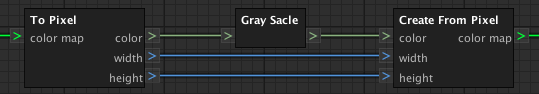

CreateColorMapFromPixelNode
The
CreateColorMapFromPixelNode
creates a color map from pixel values.
Input:
color
The pixels color.
width
The width of the color map.
height
The height of the color map.
Output:
The color map.
Internal Request:
Requests the connected color socket for x and z within the width and height.
Example:
